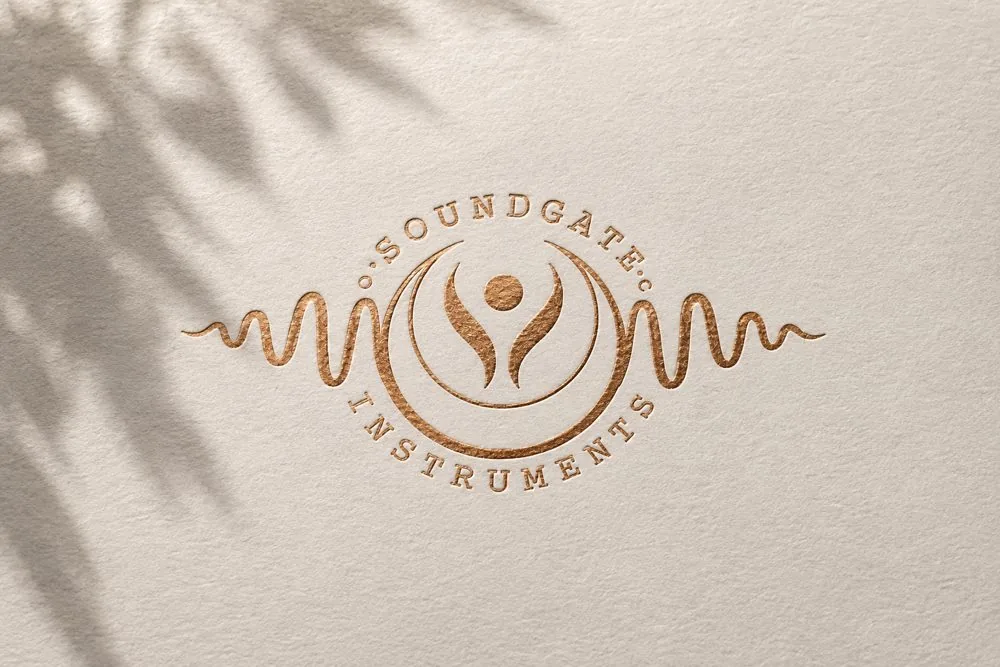
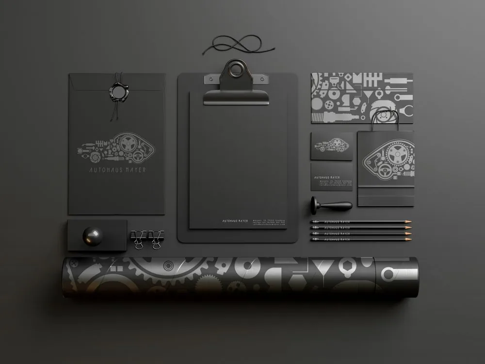

Meine Arbeiten
Design, Illustration und digitale Projekte.

Soundgate Instruments
MarkenidentitätEin handgezeichnetes Emblem für einen Hersteller handgefertigter Klangstühle — eine ruhende Figur, gehalten in einer Mondsichel, Punkt für Punkt gezeichnet, passend zur handwerklichen Präzision der Instrumente.

Autohaus Meier
MarkenidentitätEin Emblem für ein Autohaus, vollständig aus Motor- und Fahrzeugteilen aufgebaut und zur Silhouette eines Scheinwerfers arrangiert — umgesetzt auf Visitenkarten, Geschäftspapieren und Verpackungen.